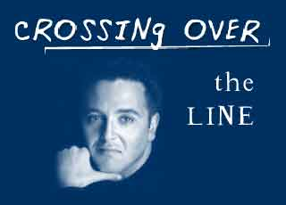

|

Crossing Over the line
When entertainment becomes fraud.
- - - - - - - - - -
by Rob Landeros
 T'S HALLOWEEN and I don't believe in ghosts. In fact, whenever the opportunity presents itself, I actively try to discourage blind beliefs in the supernatural or the giving of credence to phenomena that cannot be proved by rational means or empirical measurement. T'S HALLOWEEN and I don't believe in ghosts. In fact, whenever the opportunity presents itself, I actively try to discourage blind beliefs in the supernatural or the giving of credence to phenomena that cannot be proved by rational means or empirical measurement.
Anything that isn't rational is irrational and irrationality is dangerous because, by definition, it can't be dealt with except by more irrationality. One need not look farther than the radical fundamentalisms of the major religions. How do you deal with an Osama bin Laden or a Jerry Faldwell?
Major religions at least offer valuable lessons in how to live and behave in moral and ethical ways within a community. But the new-age TV mediums like John Edward, James van Praagh, and Sylvia Brown are merely a distraction, providing cheap-thrill tricks. The entire genre is a shallow substitute for a meaningful spiritual quest. It is pop mysticism, pseudo religion and fast food spirituality.
Our culture has gone so far as to allow Sonya Fitzpatrick, the so-called Pet Psychic, to have her own show on the Animal Planet. Fitzpatrick, an elderly, stately English lady, has the unmitigated gall to look straight into the face of grieving pet owners and before an international audience shamelessly relay inane messages from dearly departed pets of all kinds. "Rover says he prefers that you paint your bedroom blue.", she asserts. Never mind that dogs are color blind and don't give a shit about interior decor. "Iggy the iguana says he is feeling lonely." she pronounces. Never mind that reptiles have no cerebral cortex with which to have concepts such as loneliness. "Tabby is in kitty heaven and wants to tell you Meow, meow, meow." This she does with a straight face and the willing complicity of her audience who, rather than ride her out of town on a rail as a fraud and demented crackpot, weep and embrace her in maudlin gratitude.
Except for Fitzpatrick and Brown, I consider Edward and van Praagh to be highly skilled magicians and con artists who create convincing illusions of the impossible. David Blaine does the same, but he never claims that his tricks are the result of tapping into supernatural forces, although they certainly appear that way. He challenges his audience's perception of reality, but never insists that they relinquish their grasp on reality and succumb to primitive beliefs.
But the "psychics" do not and can never admit to their trickery. On the contrary, their magic acts are dependent on the audience's surrender to irrational thought and regressive instincts.
I have a tendency to feel that the fans and followers are fools who deserve to be duped. But that attitude is mitigated by an understanding of their vulnerability in the face of grief and need for comfort in their time of loss, which is a very human thing. But that only makes their exploitation by these frauds that more detestable and low. This fact alone removes this genre of magic out of the realm of legitimate entertainment and into the realm of charlatanism.

|